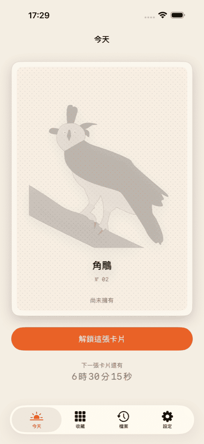
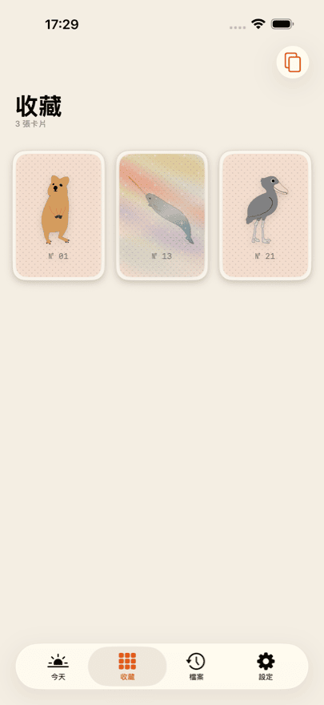
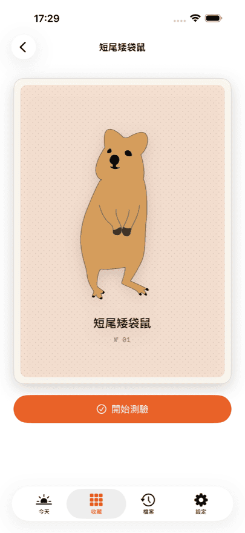
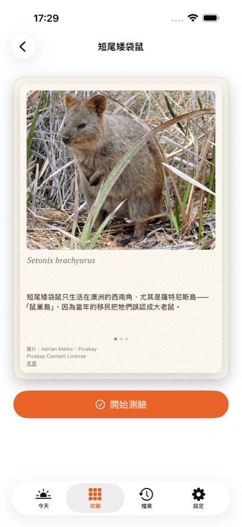
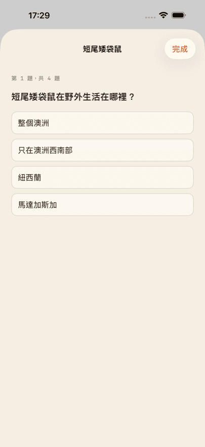

iPhone App
Daily Bestiary
值得收藏的稀有動物卡
每天都有一張手繪的新動物卡片等著你。解鎖之後它就是你的：翻到背面，有一張照片、三條知識、學名，以及四道測驗題。
前三張卡片免費。其中一張是閃卡——傾斜手機，光澤會在卡面上流動。
Daily Bestiary 即將在 App Store 推出。上架之後，這個按鈕會直接前往 App 頁面。
你會得到
-
每天一張
一張，不會更多。當天的卡片依你自己的起始日推算，而不是依日曆日期——什麼時候開始都可以。
-
一張照片和三條知識
每張背面都有該動物的真實照片、三條知識和學名。
-
每種動物一套測驗
每種動物四道題，由一位生物老師審訂。隨時可以重玩。
-
一份不斷長大的收藏
相簿裡只有你自己的卡片。沒有空位，沒有「幾分之幾」，也沒有比拼。
-
閃卡
有些卡片會發光：傾斜手機，光澤就會在卡面上移動。
看看畫面





Collector
Collector 會打開封存：錯過的那一天仍然可以補回來。每天的卡片也包含在內，你還能看到整份收藏的測驗統計。
Collector 是訂閱，在你取消之前會自動續訂。隨時可以在 Apple 帳號設定中取消。目前的價格與週期請以 App Store 為準，各個國家或地區並不相同。
圖片來源
卡片正面的插畫為手繪。背面的照片來自可自由使用的來源——Pixabay、Unsplash 與 Wikimedia Commons。
每張照片都在自己那張卡片的背面標註了攝影者、授權條款和來源連結。不是藏在細則裡，而是就在圖片所在的地方。
常見問題
Daily Bestiary 要收費嗎？
下載免費，前三張卡片也免費——背面、知識和測驗一應俱全。之後你可以單獨解鎖當天的卡片、購買十張裝，或是訂閱 Collector。目前價格請以 App Store 為準，各地並不相同。
需要註冊帳號嗎？
不需要。沒有註冊、沒有登入、沒有個人檔案。App 不會索取姓名或電子郵件地址。
總共有多少張卡片？
任何地方都沒有寫——App 裡沒有，這裡也沒有。寫出總數，收藏就變成了進度列，而那正是我們不想要的。當你集滿現有的全部卡片時，App 會告訴你。
錯過一天會怎樣？
那張卡片不會消失。Collector 會打開封存，可以把錯過的日子補回來。沒有 Collector 的話，第二天就是下一張卡片。
iPhone 和 iPad 之間會同步嗎？
會，只要兩部裝置用同一個 Apple 帳號登入 iCloud。同步透過你自己的私人 iCloud 資料庫進行，開發者無法查看。
重新安裝 App 之後，購買紀錄不見了？
沒有不見。App 的設定裡和每個購買頁面上都有「回復購買項目」。它會把訂閱和剩餘次數重新連結到你的 Apple 帳號。收藏本身則透過 iCloud 回來。
如何取消 Collector？
透過 Apple 而不是 App：設定 → 你的名稱 → 訂閱項目。可以隨時取消，於目前週期結束時生效。App 設定中的 Customer Center 也會前往同一個頁面。
沒有網路能用嗎？
可以。所有卡片、照片和題目都隨 App 一起提供，不會另行下載。只有購買和 iCloud 同步需要連線。